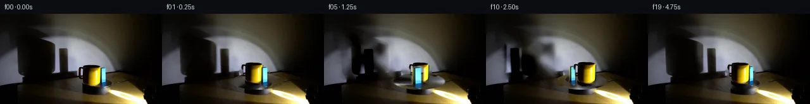

![首帧]()

Round 00
2026-11-05T00:43:31.381137+00:00像素候选变化代码 +292/−0inspection 更新
pixels 32d2376ef184ff11 · code c5abd43a8a36f875
查看本轮 generate.py 真实 diff
--- previous/generate.py +++ current/generate.py @@ -0,0 +1,292 @@ +#!/usr/bin/env python3 +"""Generate a deterministic 20-frame clockwise turntable continuation. + +Only local pixel operations are used. The supplied first frame is copied +verbatim into output frame zero; all later frames are composited from it. +""" + +from pathlib import Path +import math + +import cv2 +import numpy as np +from PIL import Image, ImageDraw + +from artifact_io import save + + +ROOT = Path(__file__).resolve().parent +H, W = 144, 256 + + +def soft_mask(poly, blur=2.0): + """Return a float antialiased polygon mask at full-frame resolution.""" + mask = np.zeros((H, W), np.uint8) + cv2.fillPoly(mask, [np.asarray(poly, np.int32)], 255) + if blur: + mask = cv2.GaussianBlur(mask, (0, 0), blur) + return mask.astype(np.float32) / 255.0 + + +def translate_float(field, dx, dy, interpolation=cv2.INTER_LINEAR): + matrix = np.float32([[1, 0, dx], [0, 1, dy]]) + return cv2.warpAffine( + field, + matrix, + (W, H), + flags=interpolation, + borderMode=cv2.BORDER_CONSTANT, + borderValue=0, + ) + + +def alpha_over(dst, rgb, alpha): + """Alpha composite same-size float RGB and scalar alpha.""" + a = np.clip(alpha, 0.0, 1.0)[..., None] + return dst * (1.0 - a) + rgb * a + + +def object_layer(source, polygon, crop_box): + """Extract an antialiased source sprite using a hand-measured silhouette.""" + x0, y0, x1, y1 = crop_box + full = soft_mask(polygon, 0.65) + rgb = source[y0:y1, x0:x1].astype(np.float32) + alpha = full[y0:y1, x0:x1] + return rgb, alpha + + +def resize_sprite(rgb, alpha, sx, sy, light_gain=1.0): + nh = max(2, int(round(rgb.shape[0] * sy))) + nw = max(2, int(round(rgb.shape[1] * sx))) + out_rgb = cv2.resize(rgb, (nw, nh), interpolation=cv2.INTER_CUBIC) + out_a = cv2.resize(alpha, (nw, nh), interpolation=cv2.INTER_LINEAR) + + # Preserve source color relationships while permitting a small fixed-light + # modulation as each object visits the right/left side of the platform. + out_rgb = np.clip(out_rgb * light_gain, 0, 255) + return out_rgb, np.clip(out_a, 0, 1) + + +def paste_at_base(canvas, sprite, center_x, base_y): + """Composite a sprite positioned by horizontal center and contact baseline.""" + rgb, alpha = sprite + sh, sw = alpha.shape + x0 = int(round(center_x - sw / 2)) + y0 = int(round(base_y - sh + 1)) + x1, y1 = x0 + sw, y0 + sh + cx0, cy0 = max(0, x0), max(0, y0) + cx1, cy1 = min(W, x1), min(H, y1) + if cx0 >= cx1 or cy0 >= cy1: + return canvas + sx0, sy0 = cx0 - x0, cy0 - y0 + sx1, sy1 = sx0 + (cx1 - cx0), sy0 + (cy1 - cy0) + a = alpha[sy0:sy1, sx0:sx1, None] + canvas[cy0:cy1, cx0:cx1] = ( + canvas[cy0:cy1, cx0:cx1] * (1 - a) + + rgb[sy0:sy1, sx0:sx1] * a + ) … diff truncated; 205 more lines …